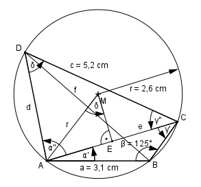

Aufgabe 163 Wie groß ist die Diagonale f des Sehnenvierecks?

δ = 180° - β = 180° - 125° = 55° Im Dreieck AEM: Der Winkel bei M ist der halbe Mittelpunktswinkel also gleich dem Umfangswinkel δ über der Sehne AC. e/2 sin δ = ----- |*r r r * sin δ = e/2 |*2 e = 2 * r * sin δ = = 2 * 2,6 cm * sin 55° = 2 * 2,6 cm * 0,8192 = = 4,3 cm Im Dreieck ABC: Fall SSW: Sinussatz: e a ------- = -------- |*sin γ’ sin β sin γ’ e * sin γ’ -------------- = a |*sin β sin β e * sin γ’ = a * sin β |:e a * sin β sin γ’ = ----------- = e 3,1 cm * sin 125° 3,1 cm * 0,8192 = ------------------- = ----------------- = 4,3 cm 4,3 cm = 0,5906 --> γ’ = 36,2° Im Dreieck ABC: Fall SSW: Sinussatz: e c ------- = -------- |*sin α’’ sin δ sin α’’ e * sin α’’ ------------- = c |*sin δ sin δ e * sin α’’ = c * sin δ |:e c * sin δ sin α’’ = ----------- = e 5,2 cm * sin 55° 5,2 cm * 0,8192 = ------------------ = ------------------ = 4,3 cm 4,3 cm = 0,9907 --> α’’ = 82,2° γ’’ = 180° - δ – α’’ = 180° - 55° - 82,2° = 42,8° Im Dreieck ACD: Fall SSW: Sinussatz: d c -------- = -------- |*sin γ’’ sin γ’’ sin α’’ c * sin γ’’ d = ------------- = sin α’’ 5,2 cm * sin 42,8° 5,2 cm*0,6794 = -------------------- = --------------- = 3,6 cm sin 82,2° 0,9907 α’ = 180° - β – γ’ = = 180° - 125° - 36,2° = 18,8° α = α’ + α’’ = 18,8° + 82,2° = 101° Im Dreieck ACD: Fall SWS: Cosinussatz: f2 = a2 + d2 - 2 * a * d * cos α f2 = 3,12 + 3,62 - 2 * 3,1 * 3,6 * cos 101° f2 = 3,12 + 3,62 - 2 * 3,1 * 3,6 * (-0,1908) f2 = 26,8 |√ f = 5,2 cm